霊山観音/京都府京都市
超観光スポット、京都東山。
清水寺を筆頭に数々の観光スポットがひしめくA級観光地の一角に大観音がおわす。
場所は清水寺と円山公園の間だがメインルートから少し奥まっていて見えないので三年坂あたりをうろついた方でも全く記憶にない方も多いことだろう。
かと思えば広い駐車場が目の前にあるので車を停めたら偶然見かけたという方も多いだろう。
いずれにしてもこの霊山観音拝観をメインにここに来る人は非常に少ないだろう。
・・・あ、オレだ。
と、いうわけで霊山観音である。
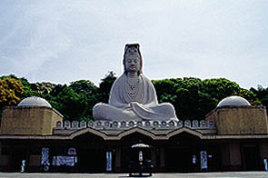
霊山観音は昭和30年に開眼された大観音である。
高さは24メートル。
工法は鉄骨にショットコンクリート打工法とパンフに記載されていた。
ところでショットコンクリートって何？調べてみるといわゆる一般の型枠に流し込む方法ではなく、内枠だけを組み、そこにコンクリートを圧縮空気で吹き付ける施工法だそうです。この工法はトンネルの内壁などに使用されるそうだが複雑な形状の工法にも良く用いられるそうだ。例えば大観音とか。
このショットコンクリート打工法は30年程前から一般的に使われはじめた工法だったとの事で、昭和30年開眼のこの霊山観音は当時最新の工法を用いて建設された事になる。
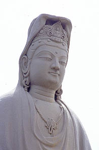
どーですか、お客さん。この細かい細工。この時期につくられた大観音の中では抜群に細工が細かい。
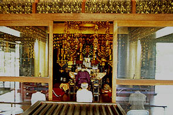
観音像の下には内陣があり、本尊の秘仏十一面観音がまつられている。
考えてみたら大観音の内部に純粋な宗教空間がある事自体珍しい。そう、ここは他の大観音よりもお寺としての意味合いが強い。
私が訪れた時は内陣で法事をやっていた。
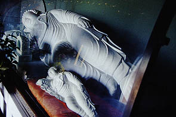 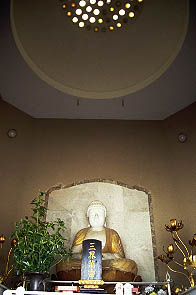
内陣の左右にはドーム屋根の小部屋がありそれぞれ涅槃像と三尊像が置かれていた。
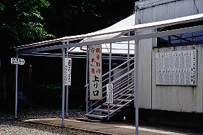
さて、建物の裏手に回ると観音胎内守り本尊という看板が見える。
表のモダンで立派な造りとは対照的に裏側は鉄骨で作られたいかにもチープな感じ。
もしかしたら後から付け足したのかも。ということは胎内巡りも後から？
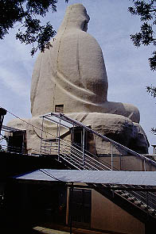
階段を上り台座の裏手から胎内に入る。
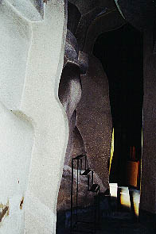 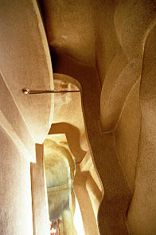
内部は単層階でロの字型の平面。上写真は入り口とそのすぐ隣にある出口の間のスペース。
いかにもコンクリ大観音の内部らしいグニャグニャとねじまがった壁面が私好みで大変よろしい。
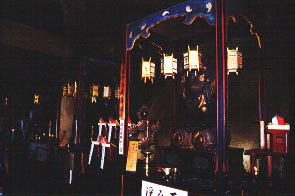
内部は差程広くなく、コの字型に十二支守り本尊がまつられている。篤い信仰心を持った方、もしくは大観音が三度の飯よりも好きな御仁でなければ拝観所要時間は1分程度。ただし願い事、悩み事、病気等のある方はもう少し長くかかるかも。
出口近くに鉄梯子が架かっていて天井に四角い穴が開いていた。
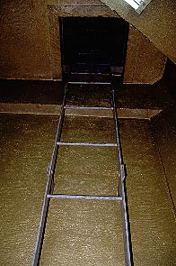
登って上を見上げてみると・・・
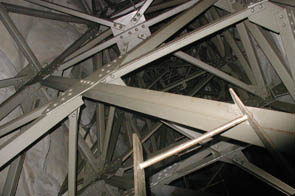 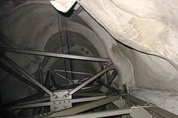
うひょ〜。鉄骨が縦横無尽に走っている。その周りには内壁。
当然だが内壁からは外側の観音像など想像出来ない。ショットコンクリート打工法ですから。
歪んだ曲面からなる内壁はカリガリ博士の映画のセットのようだ。
もしも目隠しされてこの部屋に連れてこられたら鯨に飲み込まれたのかと思うのでは。
このカリガリ部屋、残念ながら四角い小窓には鉄格子があって外から（というか下から）見るだけなのだが、わざわざ梯子が架けてあるということは、参拝客にこの内部の仕組みを見せるためのものと考えられる。メンテ用だったらわざわざこんな目に付くところにないでしょう。
つまりこれもまた大観音珍しき頃のアトラクションのひとつなんでしょう。
観音様の胎内は骨太でした。
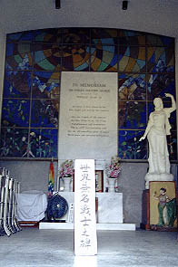
さて、この霊山観音、建立の理由として平和日本の建設と戦死者及び戦争の犠牲者の追悼が挙げられる。
これは戦争の記憶も生々しい昭和30年建造という当時の世相を繁栄していて興味深いが、メモリアルホールなるところには世界無名戦士の碑や世界各国軍人墓地の土などもあり、最近のおちゃらけた大観音と違ってかなり本気で慰霊に取り組んでいる様です。
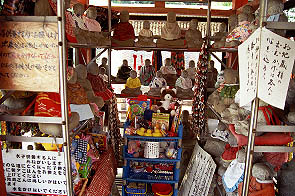
その他、敷地内には水子地蔵や仏足跡など盛り沢山の見どころが。
あと、ありとあらゆる戦没者関係の慰霊碑。
なぜかフグの慰霊碑まで・・・
全体の印象としては大観音といえばユーモラスなところが多いのだが、ここは凄く真面目で私にとっては逆に新鮮でした。
2002.5.
珍寺大道場 HOME